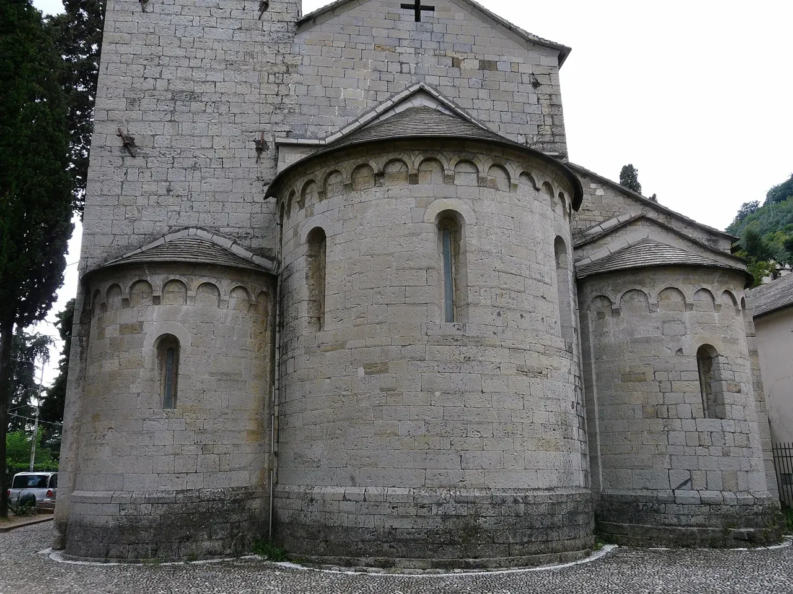

Struppa
San Siro di Struppa

Una chiesa medievale sulle alture della Val Bisagno, inserita negli itinerari culturali del Municipio IV.
Una curiosità
L’itinerario delle chiese incontra anche il ponte canale del Rio Torbido.
ESPLORA GENOVA
Chiese medievali e paesaggi di valle sulle tracce dell’acqua.
Staglieno, Molassana, Struppa, San Gottardo, Sant’Eusebio e Montesignano.
Comune · Municipi e quartieri ↗
Struppa

Una chiesa medievale sulle alture della Val Bisagno, inserita negli itinerari culturali del Municipio IV.
L’itinerario delle chiese incontra anche il ponte canale del Rio Torbido.
I riferimenti descrivono il percorso urbano. Non sono indicazioni su sensi di marcia, cantieri o accessibilità.
La salita mette in relazione il fondovalle con le alture verso Castelletto. Il collegamento è documentato nei percorsi AMT.
AMT · Collegamento Manin–Bobbio ↗ · Controllo: 17 ottobre 2026.
Questa è una prima selezione: altre strade e altri luoghi saranno aggiunti dopo la verifica delle fonti.
Scegli un altro municipio →